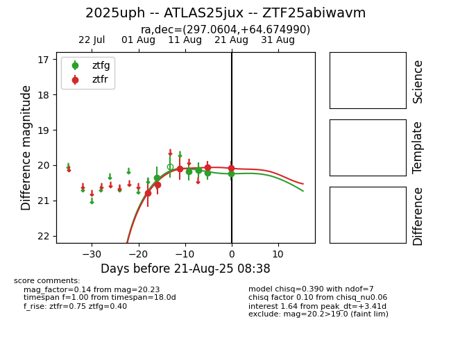

Target 2025uph at 2025-08-22 17:16, see:
FINK: fink-portal.org/ZTF25abiwavm
Lasair: lasair-ztf.lsst.ac.uk/objects/ZTF25abiwavm
ALeRCE: alerce.online/object/ZTF25abiwavm
TNS: wis-tns.org/object/2025uph
YSE: ziggy.ucolick.org/yse/transient_detail/2025uph
alt names
ZTF25abiwavm (ztf,alerce)
2025uph (tns,yse)
ATLAS25jux (atlas)
PS25gsc (panstarrs)
coordinates:
equatorial (ra, dec) = (297.0604,+64.67499)
galactic (l, b) = (96.9872,+18.58849)
photometry
last ztfg=20.23, ztfr=20.07
6 ztfg, 5 ztfr detections
